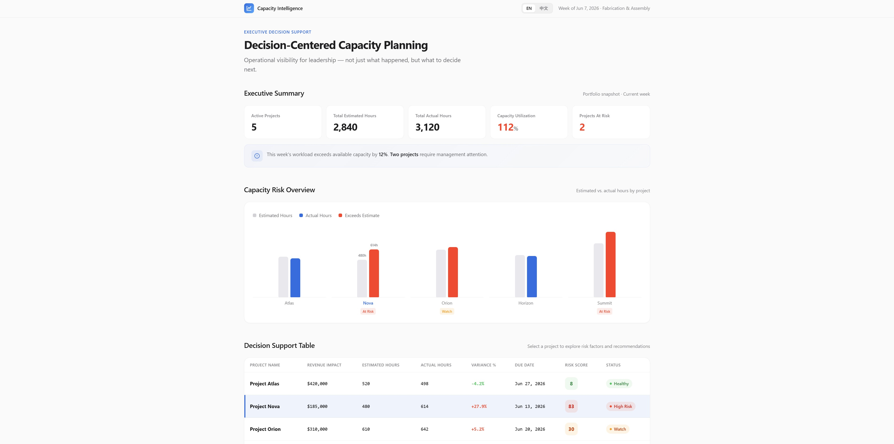
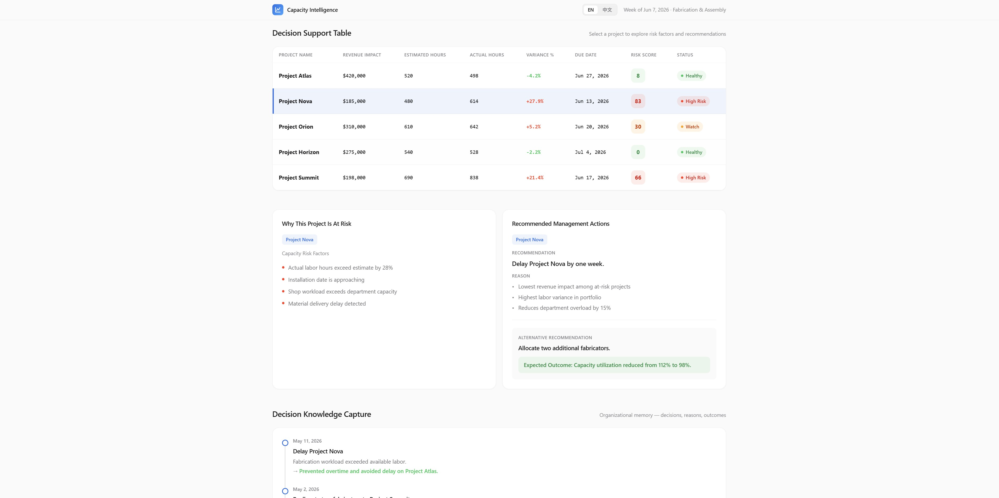
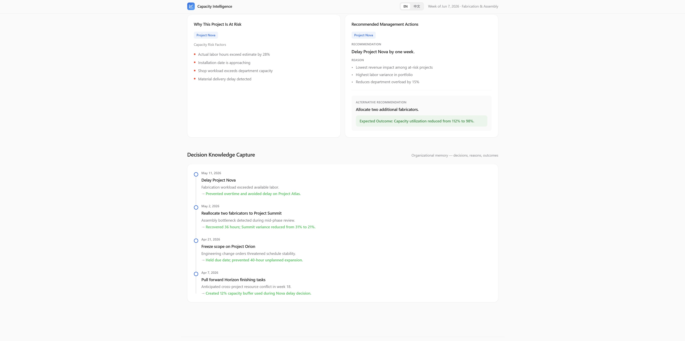

Decision-Centered Capacity Planning
以決策為核心的產能規劃系統
Transforming Capacity Planning into a Decision Support System

Challenge
Production planning meetings repeatedly depended on a small number of experienced managers.
When schedule conflicts occurred, decisions were often fast and effective, but the reasoning behind them remained invisible to the rest of the organization.
This created three long-term risks:
- Decision-making was difficult to replicate
- Trade-offs lacked transparency
- Organizational knowledge could not be systematically retained
Approach
Rather than immediately building a custom scheduling platform, I first focused on understanding how decisions were actually made.
Key questions included:
- Which metrics did management truly trust?
- Which information influenced decisions?
- Where did existing workflows break down?
- Why had previous attempts failed?
This observation phase helped identify the gap between operational data and management decision-making.
Solution
A decision-centered capacity planning system was developed to make operational constraints visible.
The system consolidated:
- Estimated vs actual labor hours
- Department workload distribution
- Capacity utilization
- Project risk indicators
The goal was not to automate decisions, but to make trade-offs visible and discussable.
Concept Demonstration


Outcome
Discussions gradually shifted from personal memory and intuition toward shared operational data.
What was previously embedded in individual experience became:
- Visible
- Reviewable
- Transferable
The system evolved from a reporting tool into a foundation for weekly management discussions.
Key Insight
The real challenge was not scheduling.
It was decision transparency.
When decision logic becomes visible, organizations become more resilient and less dependent on individual expertise.
Leave a Comment
留言
Share your thoughts about this project
分享您對此專案的想法